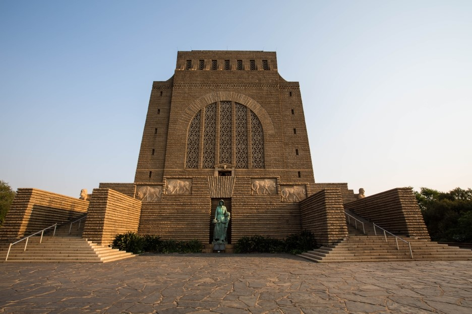
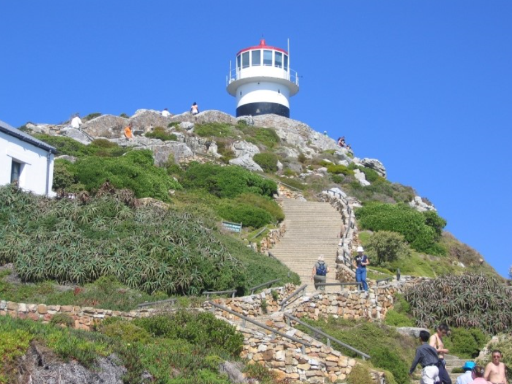

아프리카 남부의 공화국. [바른 이름]남아프리카 공화국 Republic of South Africa(영국). [다른 이름]쥐트아프리카 Südafrika(독일), 아프리크드쉬드 Afrique de Sud(프랑스). 넓이 122만 4691km2. 인구 4124만 4000명. 북쪽으로 스와질란드 · 모잠비크 · 짐바브웨 · 보츠와나 · 나미비아와 접하고 삼면이 바다(대서양 · 인도양)로 둘러싸임 수도는 프리토리아(행정)와 케이프타운(입법), 블룸폰테인(사법). 드라켄스버그 산맥 지대 등 대체로 고원 지대에 위치하며 중부지방을 오렌지 강이 관통함. 옥수수 · 밀 · 사탕수수 · 면화가 나고 남부지중해성 기후 지역은 포도 · 감귤을 생산함. 금 · 다이아몬드 · 우라늄 · 석탄 · 구리 등 광산자원이 풍부함. 아프리카대륙 제1의 공업국임. 주민은 반투계아프리카인 · 백인 · 컬러드인 · 인도인. 종교는 크리스트교 · 이슬람교 · 힌두교 등 다양한 종교가 있다.
| 관광지 |  | ||||||||
|---|---|---|---|---|---|---|---|---|---|
| 요하네버스
남아프리카공화국의 요하네스버그는 가장 번영한 상공업 도시 입니다하지만 내게는 모든 여행 중 가장 아픈 기억의 도시 입니다
아프리카엔 밀림만 있는게 아니라 유럽 못지 않은 세련된 도시
요하네스버그가 있는다는 말을 수도 없이 들었습니다 아프리카에서 유럽 분위기의 세련된 도시를 보러 가나보다 라고 단순하게 생각 했습니다 남아프리카공화국이 가장 가혹한 흑백 분리 정책을 유지 했다는 것 흑인들의 억울함과 비탄이 가득 했다는 것 등은 지식으로 뉴스로만 접했을뿐 마음으로 접하기에는 아프리카는 너무 먼 곳 이었습니다 요하네스버그 가장 높은곳 하늘을 향한 제단 같은 이곳을 방문 했을때도 아무런 사전 지식없이 뭘까? 하는 궁금증만 가지고 도착 했습니다 전쟁 기념관 입니다 아프리카에 가장 먼저 정착한 민족은 네덜란드인 입니다 종교적 이유로 박해를 피해 아프리카로 와서 농사를 지었습니다 스스로를 보어인 이라고 불렀는데 네덜란드어로 농부란 뜻 입니다 분명 아프리카는 아프리카 흑인들의 땅인데 보어인들은 마치 자기네 땅인양 거침없이 흑인들을 몰아내고 농사를 지었습니다 뿐만 아니라 흑인들의 땅인 아프리카를 놓고 마치 자기네 영토인 양 영국과 영토 전쟁도 벌였습니다 아프리카인과 영국과의 전쟁에서 이긴것을 기념 하는 전쟁 기념관 입니다 |
|||||||||
|  | |||||||||
| 배후에 테이블산(1,087m)과 라이온즈헤드가 솟아 있으며 테이블만(灣)에 면하는 천연의 양항이다. 남아프리카 공화국 의회의 소재지로서 행정부가 있는 프리토리아와 더불어 수도의 지위를 나누어 맡고 있다. 기후는 온대의 지중해성기후로 1월 평균기온 20.3℃, 7월 평균기온 11.6℃이며, 연강수량 526mm로 겨울인 5~8월에 비가 많다. 주민의 약 35%가 백인이며 유럽풍의 대도시 경관을 이룬다. 1652년 4월, 네덜란드 동인도회사가 아시아 무역의 보급기지로서 건설하여 처음에는 네덜란드어로 카프스타드(Kaapstad)라고 하였으나, 그 후 영국계 식민활동의 기점이 되었다. | |||||||||